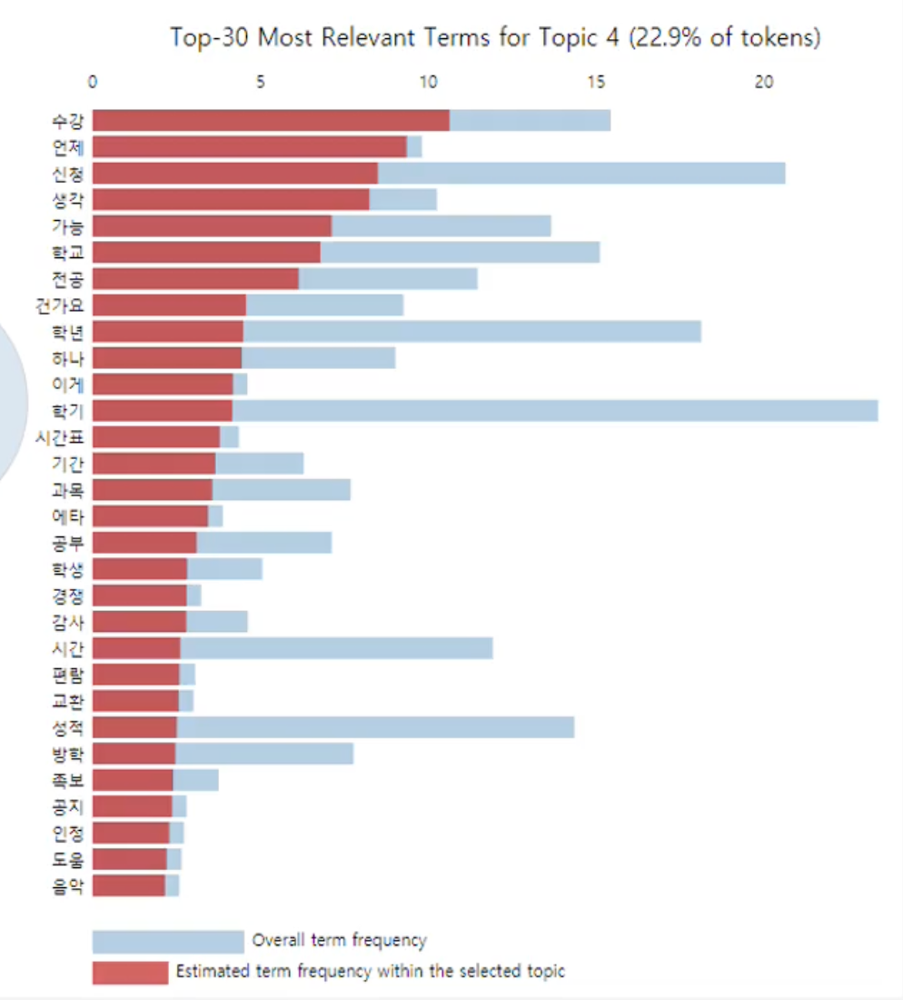
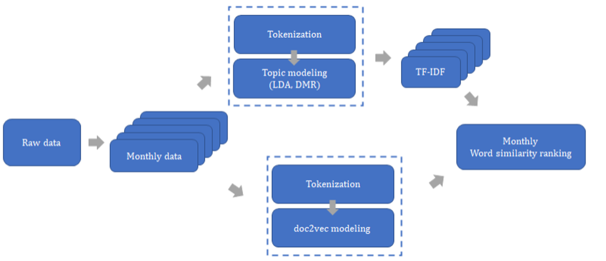

Project Overview
Crawling and Preprocessing Data
Data includes the titles and contents of each post, posting time, number of likes and comments, and links. Conducted filtering based on the number of likes and comments. Also removed stopwords and incomplete characters with consonnants, vowels, and final consonants, as well as special characters. For tokenization, used a tokenizer like Word2Vec.Embedding and Clustering
For word/sentence embedding, we used Word2Vec, Doc2Vec, and FastText embedding models and based on this, visualized the distribution of the text data. Topic Modeling
Applied various topic modeling techniques (LDA, DMR, ATM) to data and visualized the results. By applying topic modeling, develop a model that extracts information about key workds for each month based on TF-IDF and the similarity between words, assigning importance to specific words. Upon examining the monthly words in the app from 2017 to 2020, we discovered that certain words or words with similar meanings were consistently found in specific months. By predicting the demand for students' seasonal requirements in advacne,we were able to quickly provide students with necessary infomration tailored to their needs, and respond rapidly based on the opinions being formed. Based on these results, we collaborated with the student council to proactively address three topic that were expected to receive a high number of inquiries each month. We sent out relevant informational materials, emails, and other forms of communication. As a result, compared to the previous year, we achieved a 40% reduction in questions related to those specific topics.